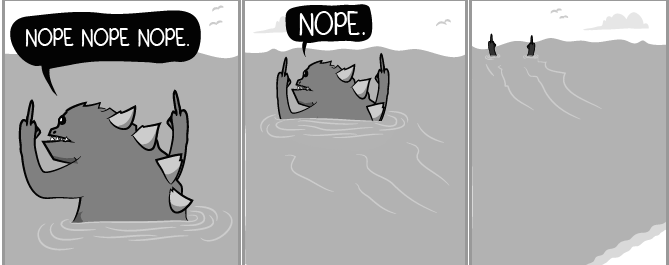
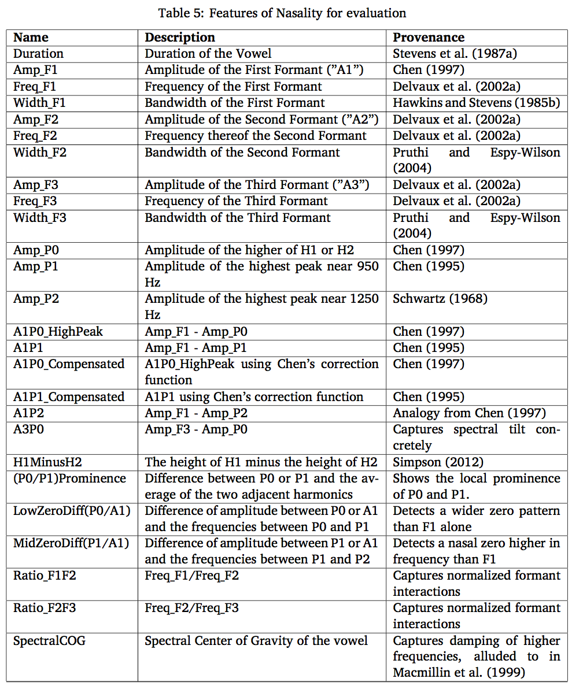
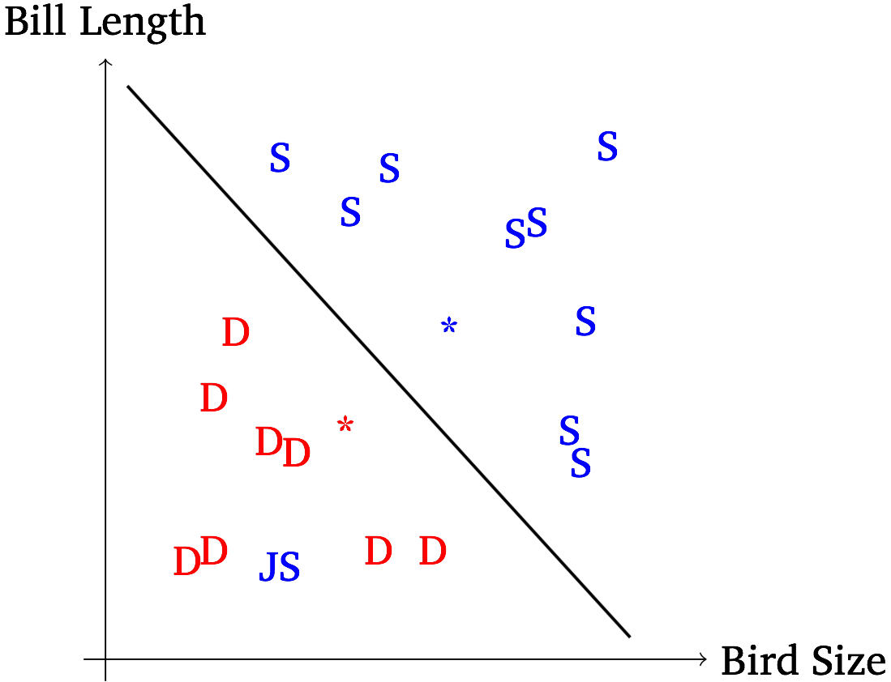
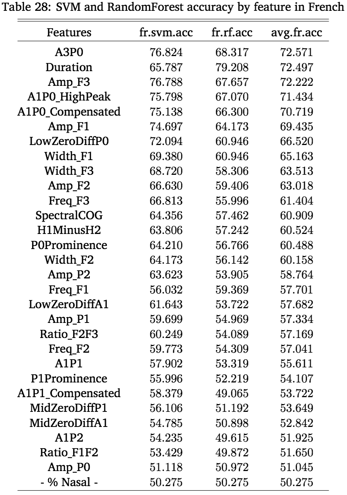
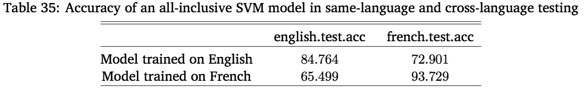

<img class="big" src="humorimg/wizardcat.jpg"> --- # Modeling Speech Perception with Machine Learning ### Will Styler --- ### Hi! I'm Will. --- # I've got a Nasality problem. --- ### Vowel Nasality Opening the Velopharyngeal Port during vowel production to allow nasal airflow --- <img class="big" src="phonmedia/sagittal.png"> --- ### Coarticulatory Nasality in English <center> <table> <tr> <th>‘Pats’<br>[pæts]</th> <th>‘Pants’<br>[pæ̃nts]</th> </tr> </table> </center> --- ### Contrastive Nasality in French <center> <table> <tr> <th>‘beautiful’ <br>[bo]</th> <th>‘good’<br>[bõ]</th> </tr> </table> </center> --- ### Humans are OK with vowel nasality * ... Yet it's complicated for Linguists... --- > “…To do my experiment I will need to find the point where nasality starts in a vowel, and I am struggling with that a bit. > Would you have an idea about possible ways to look for this point in time where nasality actually starts for each vowel, based on sound?” ---  --- Our current methods just aren't that good... --- ### A1-P0: The Reigning Champion <img src="phonmedia/chen1997figure.png"> * *“Nasality makes the vowel formants drop in power, and introduces a nasal resonance. Compare the two.”* --- ### A1-P0 lets us say things about *classes* of vowels. --- “CVN words should have increasing nasality through the vowel” (A1-P0 should drop) --- ### Sure does!* <img class="big" src="phonmedia/scarboroughfigure.png"> * *<danger>(when you have 576 measurements per point)</danger> --- ### ... but we can’t say much about nasality in this vowel right here. --- Going from known-oral to known-nasal parts of vowels, nasality should always go up. * <danger>A1-P0 shows this increase *only 56% of the time*.</danger> --- <img class="big" src="humorimg/surprisedkoala.jpg"> --- Listeners clearly can make judgements about nasality in individual vowels*, but linguists can’t. * <small>(c.f. Lahiri and Marslen-Wilson 1991, Beddor and Krakow 1999, Beddor 2013, Kingston and Macmillin 1995, Macmillin et al 1999)</small> * ## Clearly, then, Nasality is Magic. --- <img class="big" src="img/magic.jpg"> --- ## (Or we just don't know what makes nasals nasal.) --- ### That's where I come in! <img class="big" src="img/will_thumbsup.jpg"> --- # My Dissertation * "On the Acoustical and Perceptual Features of Vowel Nasality" --- ### Two Goals * 1) Figure out what acoustical features change with nasality in English and French * 2) Figure out which ones humans are actually *using* --- ### Step 1: Collect a lot of data! * I recorded 12 English and 8 French speakers making words with oral and nasal(ized) vowels --- ### Step 2: Find things that *could* encode nasality, and measure them! <img src="phonmedia/chen1997figure.png"> ---  --- ### Step 3: Check for correlations! * Use a bunch of linear fixed-effects models * It wasn't all that interesting :D --- ### Step 4: Identify 7 strongly correlated features * A1-P0, P0's Prominence, Spectral Tilt, Duration, Formant Bandwidth, and Formant Frequency <img src="phonmedia/chen1997figure.png"> --- ## ... but how do we know if they're actually helpful for finding nasality? --- # Do a Perception Experiment! --- ### The Problem: Perceptual testing using humans is inefficient and expensive. <!-- .element: class="fragment" --> --- <img class="big" src="img/cash.png"> --- <img class="big" src=img/feast.jpg> --- <img class="big" src=img/house.jpg> --- ### ... and they cheat * "I'm rooting for the **pats** in the Super Bowl" * "One should likely wear **pants** when teaching" --- ### ... and they give crappy feedback * "Uh, it just sounded like "pants", bro." * "Well, that one sounded more nasally." * "Can I get my $6 already?" --- ### The Solution? --- # Machine Learning! <img class="big" src="img/hal9000.jpg"> --- Humans hear a signal, find acoustical features, and then make judgements. * **Machines can be given features, and then make judgements too**. * Better accuracy == More useful features! --- ### Machines have some advantages! * Their decisions are easier to quantify. * They'll tell you *how* they made the decision they did. * They live in my apartment! * They have no idea what "pants" are, and don't watch football. --- ### The Plan * 1) Choose an Algorithm * 2) Give all 29 features to a Machine Learning Algorithm individually * The most accurate features should be the most useful * 3) Give them *everything*, and ask which features are most useful. * Feature weighting and importance are handy! * 4) Find the best group of features * Find the balance between "few features" and "good accuracy" * 5) Test *those* features with expensive humans. --- # Choosing Algorithms --- ### A Conventional Task * "Is this person having a bad time?" --- ### Nasal classification is an unconventional task! * The task is very hard * I don't really care about future classification * The consequences of any *individual* miss are really low * I want to learn *everything I can* about how the classification was done * I have to make ~35 different models, so it has to batch well --- ### My Algorithms of Choice * RandomForests * Because they're *transparent* * Support Vector Machines * Because they're *damned good* --- Before we get to RandomForests, we need to talk about... --- ## Decision Trees --- Let's pretend to be classifiers! --- <img class="big" src="img/kayaking.jpg"> --- > "I'm looking at a bird. What kind of bird is it?" --- One Approach: * **Ask questions, then make decisions based on the answer!** --- <section data-background="img/birds_waterfowl.png"></section> --- <img width=1200px src="img/birds_waterfowl.png"> --- By asking enough questions looking at a training set, you'd end up with a **Decision Tree**. * Classification is just "following the tree" * Ask a question, then ask a different question based on the first one, then ask another.... --- ### Decision Trees * Great for simple classification tasks * Not so great with relatively little data * They don't reliably find the best sequence of decisions * Don't tell you about feature importance --- ## RandomForests --- ### To make a RandomForest: * 1) Make a decision tree using a subset of the features and data * 2) Make another decision tree using another subset of features and data * 3-500) Do that 498 more times * 501) Synthesize these models into a single, best-performing model * 502) Classify using that mega-tree! --- Let's make a RandomForest! --- <img class="big" src="img/birds_waterfowl.png"> --- ### RandomForest Importance! * RandomForests can calculate *which features were most useful* for classification! * Reclassify, but shuffle the data for one feature per run * If this hurts the accuracy, that feature's important! * This is *awesome*! --- ### RandomForests are great! * They work well with small and large datasets * They're transparent! * ... but they're not the most accurate algorithms out there * ... and they're a bit... odd sometimes. * So we should also use a model which is more accurate * ... and less weird --- ## Support Vector Machines! --- Back to the waterfowl! --- <center> <table> <tr> <th><img height="1000" src="img/bird_mallard.jpg"></th> <th><img height="1000" src="img/bird_swan.jpg"></th> </tr> </table> </center> --- ### Your Kayaking Relative has taken a hands-on approach to classification * You are now recieving texts with bill length and body-length measurements for birds * The question is "Swan, or Duck?" --- <img class="big" src="img/birds_lengthsize.png"> --- ### Support Vector Machines * Look at all the data in an n dimensional space * n is the number of features * Try to find a hyperplane with the best separation * This hyperplane is delineated by the "support vectors" * Classification is just seeing where the new data is relative to that line --- <img class="big" src="img/birds_lengthsize_line.png"> --- ### What happens when there are unusual points? ---  --- ### Tuning C * The parameter "C" controls how much an error "costs". * Higher values for C mean the model will contort itself to avoid misclassifications * Low values for C mean that it'll capture the general pattern, even it misses a fair number of issues. * **Tuning the C Parameter is important!** * For me, it meant around 5% improvement in the final accuracy! --- ### What if the data isn't linearly separable, or is really complex? --- ### The "Kernel Trick" * The default SVM creates a feature x weight matrix * New items are evaluated by class similarity based on (feature*weight) * You can do a "kernel" trick, and specify another similarity function * There are *tons* of these out there. Radial (RBF) is very common. --- This has two consequences! * 1) **SVMs become memory-based** * 2) **They can handle non-linear data!** --- <img class="big" src="img/birds_lengthsize_line.png"> --- ### Memory-based classification * A Kernelized SVM compares each new item *to every item in the training set*, one-by-one. * A new item which is really similar to an old one (according to your kernel) will be classified similarly * **Kernelized SVMs are *very* exemplar-ish** * Awesome for speech perception! --- ### Non-linear? Non-issue! * Once the model has become kernelized, the classification space gets really weird * You're no longer looking at linear relationships * This means that a hyperplane can cut the data "non-linearly" --- <iframe data-autoplay width="840" height="500" src="http://www.youtube.com/embed/3liCbRZPrZA"></iframe> --- ### Support Vector Machines * SVMs are *really* accurate * ... and anything that beats them is usually really complex * They're a "gold standard" for machine learning * When Kernelized, they're really flexible, too! --- ### So, we have two algorithms * RandomForests for transparency * SVMs for accuracy --- ## Let's do some classification! --- # Single-feature tests --- ### Single-Feature testing * Are any features good enough *on their own* to allow nasal perception? * Using both SVMs and RandomForests. * Using 10-fold cross-validation * 116 models, one per feature per algorithm per language --- <img src="img/diss_overallacc.png"> --- <img src="img/diss_by_feature_en.png"> ---  --- So, none of the features are good enough on their own. * ### What about as part of a larger group? --- # Evaluating Feature Importance --- ### Evaluating Feature Importance * Run an all-features-included RandomForest * Compare the Importance Values for each feature --- <img class="big" src="img/diss_by_feature_importance.png"> --- I wonder if all these important features would perform well as a group...? --- # Multi-feature Models --- ### Remember, these models *love* having lots of features * SVMs and RandomForests can do very well with massive featuresets * Million+ feature sets are not uncommon * Particularly in Natural Language Processing * 29 features is not a problem --- ### Multi-feature modeling * Pick six *a priori* feature groupings * There are 20,030,007 other possible 10 feature groupings out of 29 * Test them with SVMs and RandomForests * Compare accuracy *in light of the number of features* * More features will usually mean better accuracy --- <img src="img/diss_multifeature.png"> --- # Are English and French actually different? --- ### Two questions * 1) Do they differ in terms of which features are important? * 2) Does the same classifier work well on both? --- ### Do they differ in terms of which features are important? <img src="img/diss_enfrimportance.png"> --- ### Does the same classifier work well on both? * What happens if you train a model on English, then test it on French? * ... and vice versa. * If they're fundamentally similar, it won't matter! --- ### Cross-language training  --- ## French and English do nasality differently * <img class="big" src="humorimg/surprisedbuffalo.jpg"> --- # Machine Learning is Awesome! --- ### Because of Machine Learning, I know... * What features are best for predicting nasality in English and French * How important they are, when combined * Which feature *group* is best for predicting nasality * Which features to test with humans! * ... and most importantly --- ### Nasality *can* be identified based on acoustics alone! --- (Now, I just have to test the humans) * (... and analyze that data) * (... and write it up) * (... then defend it) * (... on March 18th) --- <img class="big" src="img/terror.jpg"> --- ### Wrapping up * Machine learning isn't just useful for making predictons! * Not all algorithms work for every task * Machine learning can be a decent perceptual proxy for humans * Machine learning is useful for things that aren't NLP * Nasality is pretty much magic. --- <huge>Thank you very much!</huge> ---